POFID is a DeFi project based on SERO, the world's first privacy protection public chain supporting Turing Complete Smart Contracts. POFID stands for "Privacy-Oriented Financial Instrument Distribution Framework & DAO", which provides trusted decentralized finance with privacy protection asset management platform, POFID-DAO refers to the decentralized governance framework organization of the platform.
The privacy protection public chain SERO is not only the world's first privacy digital currency that supports Turing Complete smart contracts, but also the world's first privacy protection platform that allows developers to issue anonymous digital assets on their own, allowing decentralized applications to have privacy protection.
Features: SERO independently developed the world's fastest zero-knowledge proof encryption library called "Super-ZK", and its security performance is far beyond the current mainstream privacy coins. It is by far the most perfect blockchain privacy protection solution. SERO is an important milestone in the development of the blockchain industry. SERO tokens support Token, Ticket and Package, which can be used not only as anonymous digital assets, but also for storing complex data structures with privacy requirements, so that future blockchain technology can be more commercialization, while ensuring that business sensitive information is not leaked on the blockchain.
Relying on the SERO public chain, POFID builds the Layer 2 algorithm stable currency solution, which not only solves the problem of transparency of the decentralized stable currency represented by DAI, but also satisfies the complexity of business applications, and implements privacy data protection/anonymous payment. Solved the shortcomings of decentralized stablecoins relying too much on Ethereum; compared with MakerDAO, it has stronger usability and extensiveness, and is the landing application framework for global financial trade and currency reform. Any institution wishing to use cryptocurrency as a universal stable currency can use POFID to formulate its own currency system and issue anonymous stable currency. Its flexible mechanism settings also provide guarantee for the operation of the currency system. Simply put, the POFID platform itself does not issue anonymous stablecoins, but only provides governance solutions for anonymous and stable issuers.
The DAO of POFID uses the name PFID token as the governance certificate. Has the following functions:
• Use PFID and participate in staking to obtain PFID mining income
• Participate in platform governance decisions through PFID's staking behaviour
• Through the staking behaviour of PFID, obtain the dividend income of the entire POFID, such as the fee income generated when the loan is distributed
| Use | Amount | Percentage | Emission Cycle |
|---|---|---|---|
| Underlying Technology Governance | 600000 | 6% | 20 Years |
| DMW Governance | 300000 | 3% | 20 Years |
| Risk Control | 1500000 | 15% | 20 Years |
| SLC (Liquidation Committee) | 1000000 | 10% | 20 Years |
| Early Investment Firm | 1500000 | 15% | 1-2 Years |
| Holder Staking | 5100000 | 50% | 20 Years |
The core smart contract of POFID DAO is DMW (Decentralized Mortgage Warehouse). DMW is the core smart contract of POFID DAO, which is responsible for the storage of collateral.
Users pledge digital assets through DMW, such as SERO, and can borrow anonymous stable coins pegged to multiple currencies, such as mortgage SERO, loan USRO pegged to US dollars, or loan ESRO pegged to euros. In the future, DMW will also support collateralizing digital assets for value transmission through cross-chain, such as BTC, ETH, etc. across the SERO chain.
sequenceDiagram TO DMW->> USER: SERO/BTC/ETH... USER->> FROM DMW: SERO/BTC/ETH... FROM DMW->> USER: USRO/ESRO/UBTC/EBTC... USER->> TO DMW: USRO/ESRO/UBTC/EBTC... Operating Mechanism of POFID DAO
The user transfers the digital assets held by him to the DMW contract, obtains the stable coins, and pays some stable coin as a service fee.
The user deposits the stablecoin into the DMW smart contract to withdraw the mortgaged digital assets.
When users borrow anonymous stablecoins, the platform will deduct the corresponding service fee (2%). The fee will be used for the following: 1. To pay dividend to users who hold PFID platform coins 2. Recover PFID platform coins on the market and destroy them
Thus, POFID is deflationary, and POFID holders can benefit from the use of anonymous stable currencies for dividends and their own value-added gains.
POFID's smart contracts will monitor and warn about the value of different types of assets pledged in the DMW. When collateralizing, the system will display the mortgage rate, liquidation rate and service fee rate of the stable currency. When the amount of loan is entered, the system will automatically calculate the number of digital assets that need to be mortgaged and the service fee to be paid. When the digital asset mortgaged by the user falls below the minimum liquidation price of the system, the system will automatically sell the mortgaged asset to compensate for the depreciation of the mortgaged asset.
• If the user wants to borrow 30USRO, the real-time price of SERO is 0.06 USD, the system's mortgage rate is 200%, the settlement rate is 150%, and the service fee rate is 2%.
• The liquidation price is $ 0.009. If the SERO price hits this price, the 1000 SERO mortgaged by the user will be liquidated by the system, which will then be auctioned by the system to compensate for the stable currency value of the loan. Users can also choose to increase the collateralized digital assets, or return the borrowed USRO in time to avoid the risk of liquidation.
Novac is a dapp application based on the POFID framework and has the following functions: • Manage POFID-based issuance and related derivative assets, including transfers, withdrawals, and viewing transaction records, etc.
• Pledged POFID platform consists of POFID-DAO community, autonomous access to different type of digital assets, additional issuance/loan of anonymous stable digital coins pegged to different legal currency.
• Return the loaned stable digital coins and unlock the previously pledged digital assets. • POFID Platform Governance and Equity Token PFID for Staking Mining
• The community can participate in platform governance decisions through PFID ’s staking mechanism.
• Through the staking mechanism of PFID, obtain the dividend income of the entire POFID, such as the fee income generated when the loan is issued.
Open the PRODUCT drop menu, you can see Novac, as shown below:
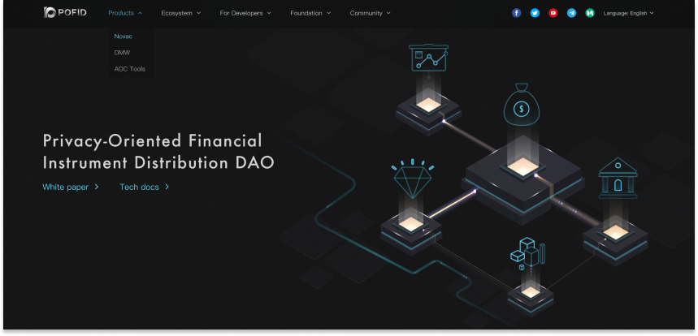
Click Novac to go to the wallet interface
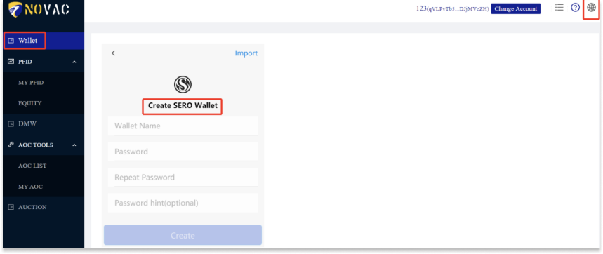
• If you do not currently have a SERO wallet account, you can create a new account. If you already have a SERO wallet account, follow the prompts to import the account using mnemonic phrase.
• You can import or create multiple accounts
• After the account is imported or created, you can see the assets currently owned by you.
• You can view the transaction history of the current account in Transactions History
Click the PFID menu on the navigation bar to access the platform governance interface
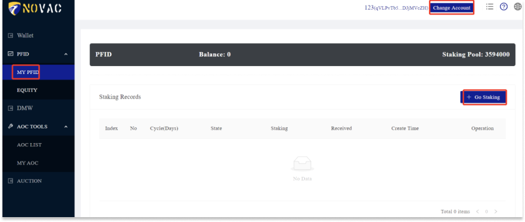
• The default account is Account1, click Change Account to select another account
• Balance: the user's current balance
• Staking Pool: the number of PFIDs currently pledged
• Staking Record: Current account pledge record
• Go Staking: Participate in pledge, deposit money to earn interest
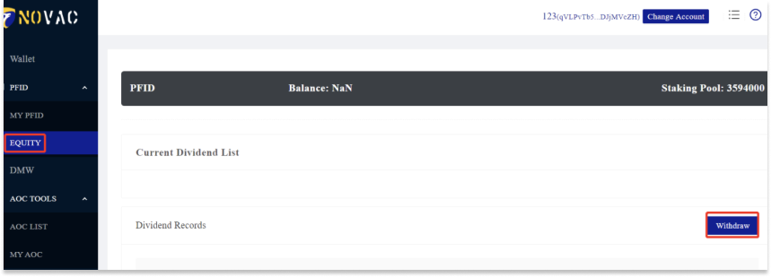
• EQUITY Interface, displays the equity tickets generated by the digital assets pledged by the users
• Equity with Staking: Current pledged equity tickets
• Now Dividend List: Current dividend list
• Dividend Record: Dividend record
DMW is a pledge warehouse of the POFID DAO platform. This is the core POFID’s smart contract, and a certain amount of digital assets can be pledged through the DMW smart contract to issue the corresponding anonymous stablecoin.
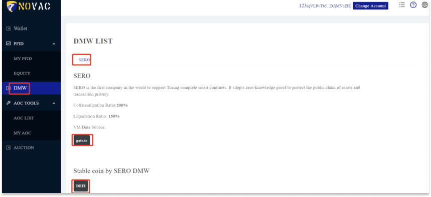
• DMW LIST: The current pledge list of the platform. The platform administrators vote to include the pledgeable digital assets into the DMW LIST. The DMW displays all the digital assets that can be mortgaged on the platform.
• Collateralization Ratio: Current pledge ratio
• Liquidation Ratio: Liquidation ratio
• VM Data Source: Real-time source of mortgage prices
• CREATE NEW SSC: Create new smart contracts, and by collateralizing digital assets, users can issue contracts that the platform has currently passed.
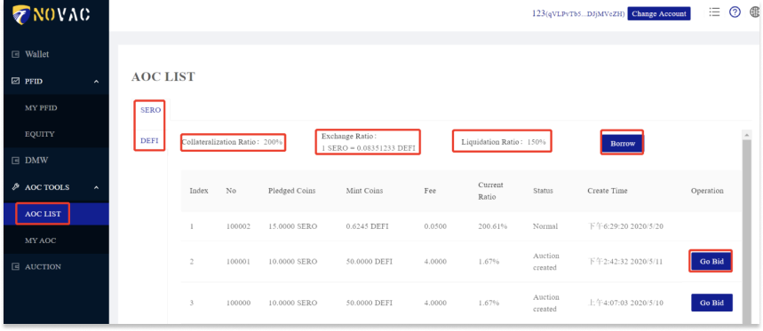
SSC List page for Mortgage Lending and Repayment
Click Borrow to get the stable coins as loan
Click Deposit to deposit the mortgaged tokens
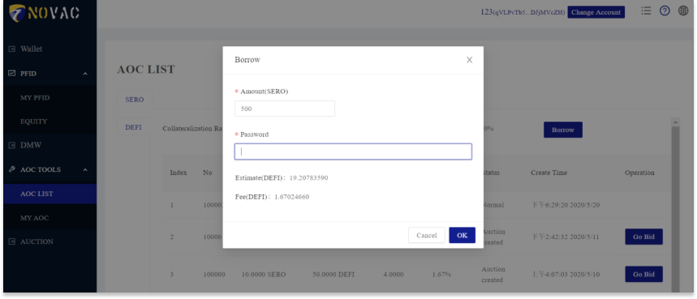
• Click the BORROW button to go to the borrowing interface, enter the borrowing amount into the 30USRO system calculation. You need to mortgage at least 1000 SERO, and pay a handling fee of 0.49 USRO. Click the Submit button to submit the loan application.
• After submitting the loan application, you will get a mortgage loan ticket. At the same time, the account was reduced by 1000 SERO and 30 USRO were added.
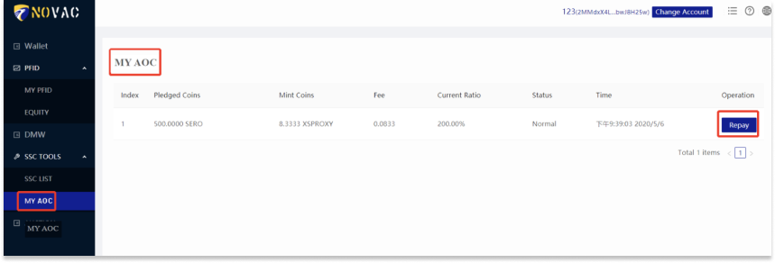
• Click the DEPOSIT button to switch to the repayment interface. Enter 30 USRO in the repayment amount, the system will automatically calculate the redeemable collateral 1000 SERO, and need to pay a 2% service fee, click the Submit button to submit the recovery application
• After submitting the recovery application, get a recovery success ticket.
• Click the Deal button to view the loan and recovery records.
Algorithmic stablecoins can issue stablecoins pegged to fiat currency by over-collateralizing digital currencies. The DMW contract allows users to issue stablecoins that have a relatively constant value relative to fiat currency by collateralizing the currencies supported by the SERO public chain (SERO coins, SERO public chain tokens, tokens that are cross-chain to the SERO public chain).
DMW smart contract is the basic tool of POFID system. Anyone can use this Smart Contract to mortgage a valuable currency (such as SERO Coins) on the SERO public chain to issue and operate the Stable Coins.
DMW smart contract has the following characteristics:
• The DMW smart contract supports the collateralization of digital currencies and the issuance of stablecoins on the basis of setting exchange rates, mortgage rates and settlement rates. For example: we can issue a USD stablecoin SUSDT mortgaged with SERO.
• Users can mortgage digital currency and call the function issue() to issue stablecoins, and then propose. For example: the number of SUSDT can be issued at a mortgage rate of 1:1.5 (~ 66.67%) (this ratio is adjustable at the time of issuance).
• Stablecoin holders are free to transfer this stablecoins to others.
• When the digital price of the mortgage falls, making the price of the stable currency issued on a particular contract lower than or equal to the mortgage rate of the pledged digital currency, smart contract will start a public auction with a starting price of targetContract.backedValue. After the auction, the highest bidder will take over the smart contract and take away the pledged stablecoin.
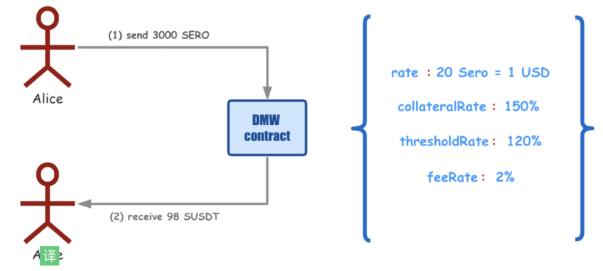
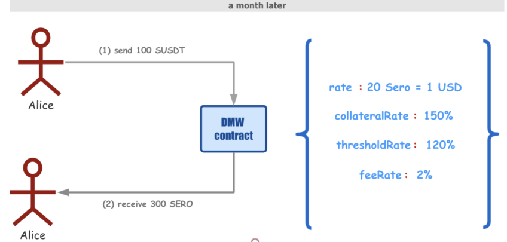
• Alice sends 3000 SERO coins to the DMW smart contract at the exchange rate of 20 SERO = 1 SUSTD (call issue function)
• Alice received 98 SUSTD (the contract charges a 2% service fee)
• Alice can send, for example, 100 SUSDT to the smart contract to get back the SERO coin mortgaged (call the claim function)
• Because the market price of SERO coin remains unchanged, the DMW smart contract will return 3000 SERO coin to Alice
• This scenario is similar to the first one. Alice can send, for example, 100 SUSDT to the smart contract, but because the price of SERO coins is rising, Alice can only get back 2,500 SERO coins.
• Alice sends 3000 SERO coins to the DMW smart contract at the current exchange ratio of 20 SERO = 1 SUSDT (call issue function)
• Alice received 98 SUSDT (the contract charges a 2% service fee)
• After one month, the market price of SERO drops to 26 SERO/USD, DMW Smart Contractforce will auction the Alice-related currency issuance contract (exchange ratio is lower than 1.2 SERO: 1 SUSDT), anyone can bid to buy, starting at 3000 / 26 SUSDT
• Bob uses SUSTD to participate in the bidding of this auction, and he is the highest bidder during the auction, Bob takes over Alice’s coin issuing contract by providing 120SUDT
• Bob took 3,000 SEROs from the currency issuance contract. At this time, Alice lost her currency issuance contract, but still holds 98 SUSDT有98个SUSDT
• Issuing new stablecoins by collateralizing digital currencies supported on the SERO chain
• Obtain the digital currency price through the Oracle machine
• The DMW contract forces the sale of unhealthy currency issuance contracts (lower than the current market price of mortgaged currencies)
• The system will automatically list all issued contracts.
PofidStaking is a decentralized application (DApp), a token issued on the SERO chain when PFID coins are issued. PofidStaking supports staking of PFID coins, which means that each PFID holder can obtain some additional PFID by staking for a period of time, and the pledge period is 30 days, 60 days and 90 days. At the same time, participating in PFID staking can also obtain additional rewards, i.e, the fee in the process of issuing various stable coins in the POFID ecosystem. PFID issued a total of 10 million, of which 5.1 million will be generated by PofidStaking within 10 years, with an annual emission of up to 500,000. By controlling the interest rate of the pledge cycle, only if all the currently issued PFID coins participate in the 90-day PoS, we can guarantee that 500,000 PFID coins are issued every year. This means that in actual situations, PFID coins may be partially destroyed every year. The final result is that the total issued amount of all PFID coins will be less than 10 million.
• In the first year, the staking interest is 4% every 30 days, and thereafter it will be reduced by 10% each year
• In the first year, the staking interest is 1% every 60 days, and thereafter it will be reduced by 10% each year
• In the first year, the interest for staking is 2.4% every 90 days, and thereafter it will be reduced by 10% every year
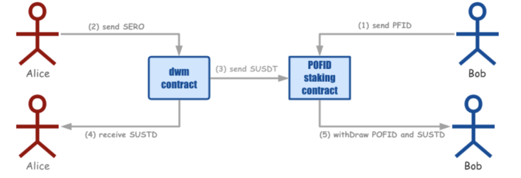
• Bob mortgaged some PFID coins into the Staking smart contract.
• When Alice issues stablecoins, its service fee will be sent to the PofidStaking smart contract, and the stablecoins after deducting the service fee will be sent to Alice's account address
• After the expiration of Bob ’s PFID pledge, it will not only get the normal staking interest income, but also the fee income automatically issued by various stable currency contracts issued by DMW during this period.